CSS 基础总结 1/7
1 CSS 简介
1.1 CSS 的作用
- HTML 主要做结构，显示元素内容。
- CSS 用于美化 HTML，布局网页。
- CSS 最大价值: 由 HTML 专注去做结构呈现，样式交给 CSS，即结构（HTML）与样式（CSS）相分离。
1.2 CSS 语法规范
CSS 规则由两个主要的部分构成：选择器以及一条或多条声明。
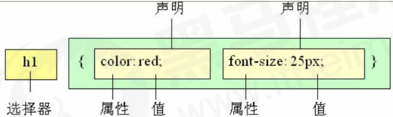
- 选择器是用于指定 CSS 样式的 HTML 标签，花括号内是对该对象设置的具体样式。
- 属性和属性值以“键值对”的形式出现。
- 属性是对指定的对象设置的样式属性，例如字体大小、文本颜色等。
- 属性和属性值之间用英文“:”分开。
- 多个“键值对”之间用英文“;”进行区分。
所有的样式，都包含在 <style> 标签内，表示是样式表。 <style> 一般写到 </head> 上方。
<head>
<style>
h4 {
color: blue;
font-size: 100px;
}
</style>
</head>1.3 CSS 推荐代码风格
- 展开格式
h3 {
color: pink;
font-size: 20px;
}- 全部小写
样式选择器，属性名，属性值关键字全部使用小写字母。
空格规范
- 属性值前面，冒号后面，保留一个空格；
- 选择器（标签）和大括号中间保留空格。
2 CSS 基础选择器
参考文档：CSS 选择器参考手册 (w3school.com.cn)
2.1 选择器的作用
选对指定的标签，设置正确的标签样式。
2.2 选择器分类
分为基础选择器和复合选择器两个大类。
基础选择器：
基础选择器是由单个选择器组成的
基础选择器又包括：标签选择器、类选择器、id 选择器和通配符选择器
2.3 标签选择器
标签选择器（元素选择器）是指用 HTML 标签名称作为选择器，按标签名称分类，为页面中某一类标签指定统一的 CSS 样式。
- 语法：
标签名{
属性1: 属性值1;
属性2: 属性值2;
属性3: 属性值3;
...
} 作用：标签选择器可以把某一类标签全部选择出来，比如所有的
<div>标签和所有的<span>标签。优点：能快速为页面中同类型的标签统一设置样式。
缺点：不能设计差异化样式，只能选择全部的当前标签。
2.4 类选择器
如果想要差异化选择不同的标签，单独选一个或者某几个标签，可以使用类选择器。
类选择器在 HTML 中以 class 属性表示，在 CSS 中，类选择器以一个点“.”号显示。
- 语法：
.类名 {
属性1: 属性值1;
...
} 例如，将所有拥有 red 类的 HTML 元素均为红色。
.red {
color: red;
}构需要用class属性来调用 class 类的意思:
<div class=‘red’> 变红色 </div>- 注意
- 类选择器使用“.”（英文点号）进行标识，后面紧跟类名（自定义，我们自己命名的）。
- 可以理解为给这个标签起了一个名字，来表示。
- 长名称或词组可以使用中横线来为选择器命名。
多类名
我们可以给一个标签指定多个类名，从而达到更多的选择目的。 这些类名都可以选出这个标签。 简单理解就是一个标签有多个名字。
<div class="red font20">亚瑟</div>多类名使用方式
- 在标签 class 属性中写多个类名
- 多个类名中间必须用空格分开
- 这个标签就可以分别具有这些类名的样式
多类名开发中使用场景
- 可以把一些标签元素相同的样式（共同的部分）放到一个类里面。
- 这些标签都可以调用这个公共的类和自己独有的类。
- 从而节省CSS代码，方便统一修改。
2.5 id 选择器
id 选择器可以为标有特定 id 的 HTML 元素指定特定的样式。 HTML 元素以 id 属性来设置 id 选择器，CSS 中 id 选择器以“#” 来定义。
- 语法
#id名 {
属性1: 属性值1;
...
}例如，将 id 为 nav 元素中的内容设置为红色。
#nav {
color:red;
}id 属性只能在每个 HTML 文档中出现一次。
id 选择器和类选择器的区别
- 类选择器（class）好比人的名字，一个人可以有多个名字，同时一个名字也可以被多个人使用。
- id 选择器好比人的身份证号码，是唯一的，不得重复。
- id 选择器和类选择器最大的不同在于使用次数上。
- 类选择器在修改样式中用的最多，id 选择器一般用于页面唯一性的元素上，经常和 JavaScript 搭配使用。
2.6 通配符选择器
在 CSS 中，通配符选择器使用“*”定义，它表示选取页面中所有元素（标签）。
- 语法
* {
属性1: 属性值1;
...
} 通配符选择器不需要调用， 自动就给所有的元素使用样式。在特殊情况下才使用。
* {
margin: 0;
padding: 0;
} 2.7 基础选择器总结
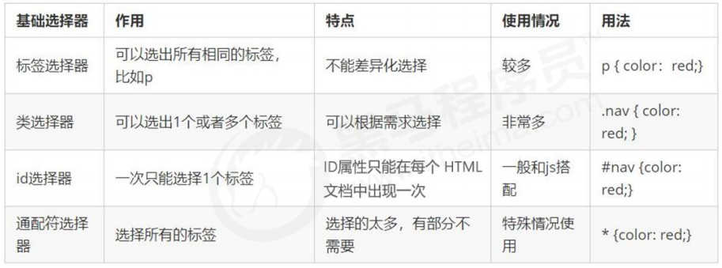
如果是修改样式， 类选择器是使用最多的。
3 CSS 字体属性
CSS Fonts (字体)属性用于定义字体系列、大小、粗细、和文字样式（如斜体）。
3.1 字体系列 font-family
p { font-family:"微软雅黑";}
div {font-family: Arial,"Microsoft Yahei", "微软雅黑";}
- 各种字体之间必须使用英文状态下的逗号隔开
- 一般情况下，如果有空格隔开的多个单词组成的字体，加引号
- 尽量使用系统默认自带字体，保证在任何用户的浏览器中都能正确显示
- 最常见的几个字体：body {font-family: ‘Microsoft YaHei’,tahoma,arial,’Hiragino Sans GB’; }
3.2 字体大小 font-size
p {
font-size: 20px;
}3.3 字体粗细 font-weight
p {
font-weight: bold;
}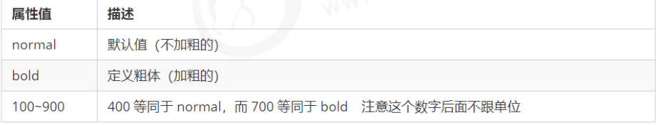
3.4 文字样式 font-style
p {
font-style: normal;
}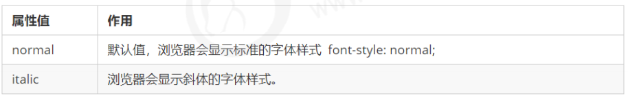
3.5 字体复合属性
body {
font: font-style font-weight font-size/line-height font-family;
}- 使用 font 属性时，必须按上面语法格式中的顺序书写，不能更换顺序，并且各个属性间以空格隔开
- 不需要设置的属性可以省略（取默认值），但必须保留 font-size 和 font-family 属性，否则 font 属性将不起作用
3.6 字体属性总结
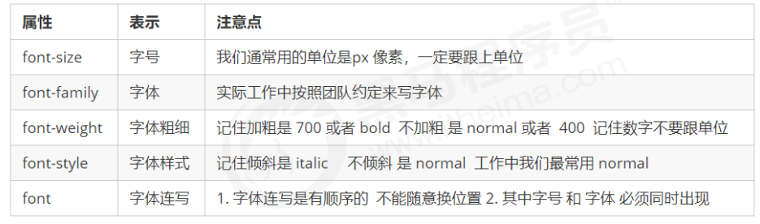
4 CSS 文本属性
CSS Text（文本）属性可定义文本的外观，比如文本的颜色、对齐文本、装饰文本、文本缩进、行间距等。
4.1 文本颜色 color
div {
color: red;
}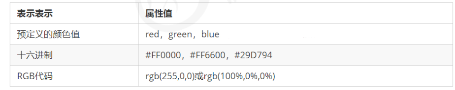
开发中最常用的是十六进制
4.2 对齐文本 text-align
div {
text-align: center;
}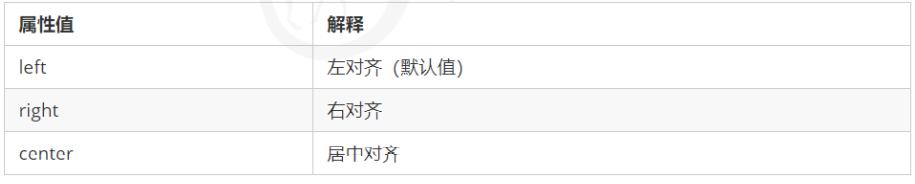
4.3 装饰文本 text-decoration
div {
text-decoration：underline；
}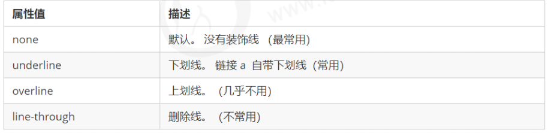
4.4 文本缩进 text-indent
text-indent 属性用来指定文本的第一行的缩进，通常是将段落的首行缩进。
div {
/* text-indent: 10px; */
text-indent: 2em;
}通过设置该属性，所有元素的第一行都可以缩进一个给定的长度，甚至该长度可以是负值。
em 是一个相对单位，就是当前元素（font-size) 1 个文字的大小, 如果当前元素没有设置大小，则会按照父元 素的 1 个文字大小。
4.5 行间距 line-height
line-height 属性用于设置行间的距离（行高）。可以控制文字行与行之间的距离。
p {
line-height: 26px;
}4.6 文本属性总结
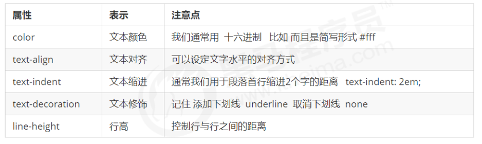
5 CSS 的引入方式
5.1 CSS 的三种样式表
按照 CSS 样式书写的位置（或者引入的方式），CSS 样式表可以分为三大类：
- 行内样式表（行内式）
- 内部样式表（嵌入式）
- 外部样式表（链接式）
5.2 内部样式表
内部样式表（内嵌样式表）是写到 HTML 页面内部. 是将所有的 CSS 代码抽取出来，单独放到一个 <style> 标签中。
<style>
div {
color: red;
font-size: 12px;
}
</style><style>标签理论上可以放在 HTML 文档的任何地方，但一般会放在文档的<head>标签中- 通过此种方式，可以方便控制当前整个页面中的元素样式设置
- 代码结构清晰，但是并没有实现结构与样式完全分离
- 使用内部样式表设定 CSS，通常也被称为嵌入式引入，这种方式是我们练习时常用的方式
5.3 行内样式表
行内样式表（内联样式表）是在元素标签内部的 style 属性中设定 CSS 样式。适合于修改简单样式。
<div style="color: red; font-size: 12px;">内容</div>- style 其实就是标签的属性，在双引号中间，写法要符合 CSS 规范
- 可以控制当前的标签设置样式
- 由于书写繁琐，并且没有体现出结构与样式相分离的思想，所以不推荐大量使用，只有对当前元素添加简 单样式的时候，可以考虑使用
- 使用行内样式表设定 CSS，通常也被称为行内式引入
5.4 外部样式表
实际开发都是外部样式表. 适合于样式比较多的情况. 核心是:样式单独写到CSS 文件中，之后把CSS文件引入 到 HTML 页面中使用。
引入外部样式表分为两步：
- 新建一个后缀名为 .css 的样式文件，把所有 CSS 代码都放入此文件中。
- 在 HTML 页面中，使用 标签引入这个文件。
<link rel="stylesheet" href="css文件路径">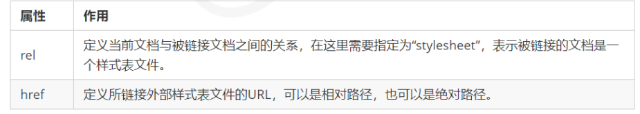
使用外部样式表设定 CSS，通常也被称为外链式或链接式引入，这种方式是开发中常用的方式
5.5 CSS 引入方式总结
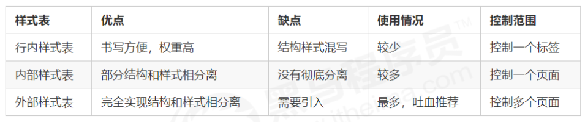